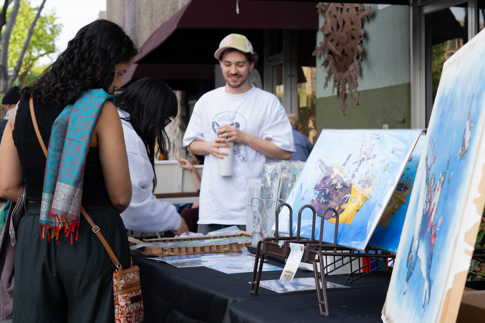
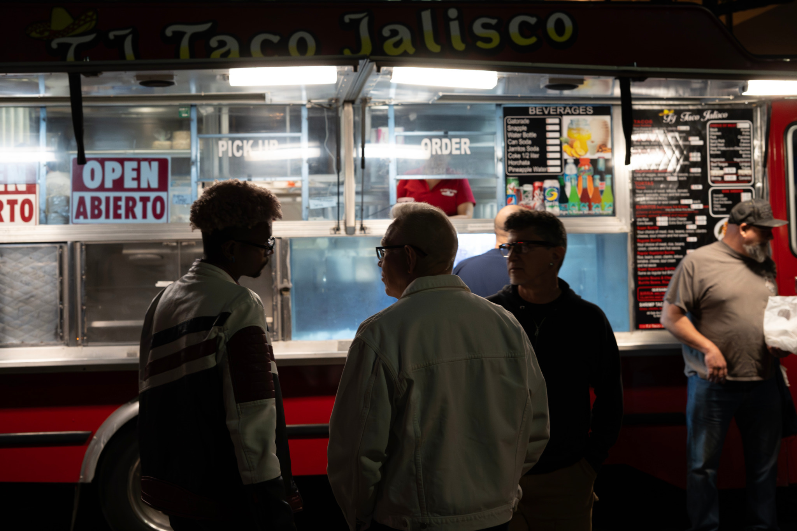
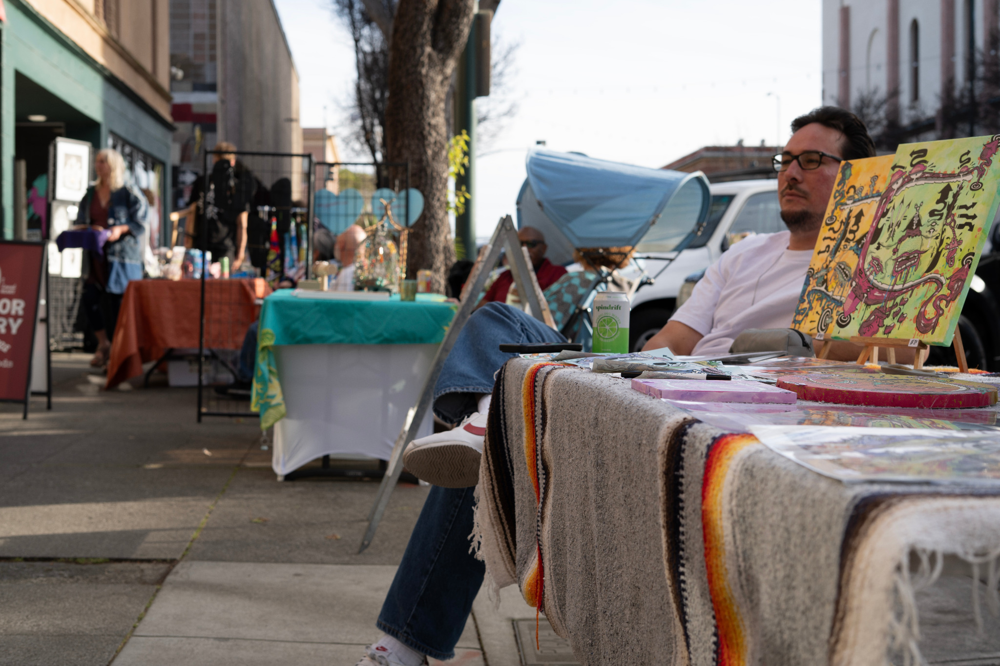
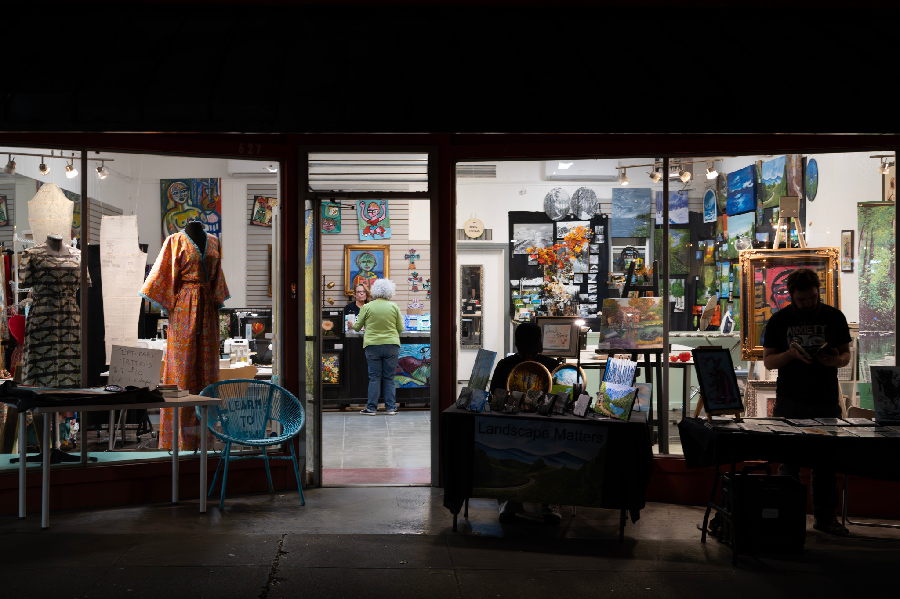
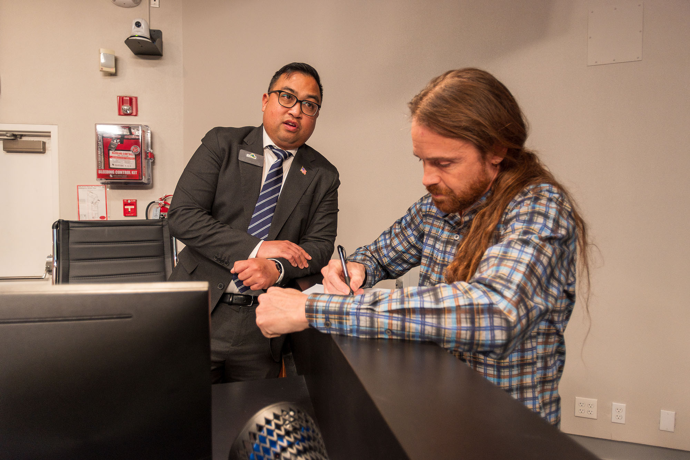
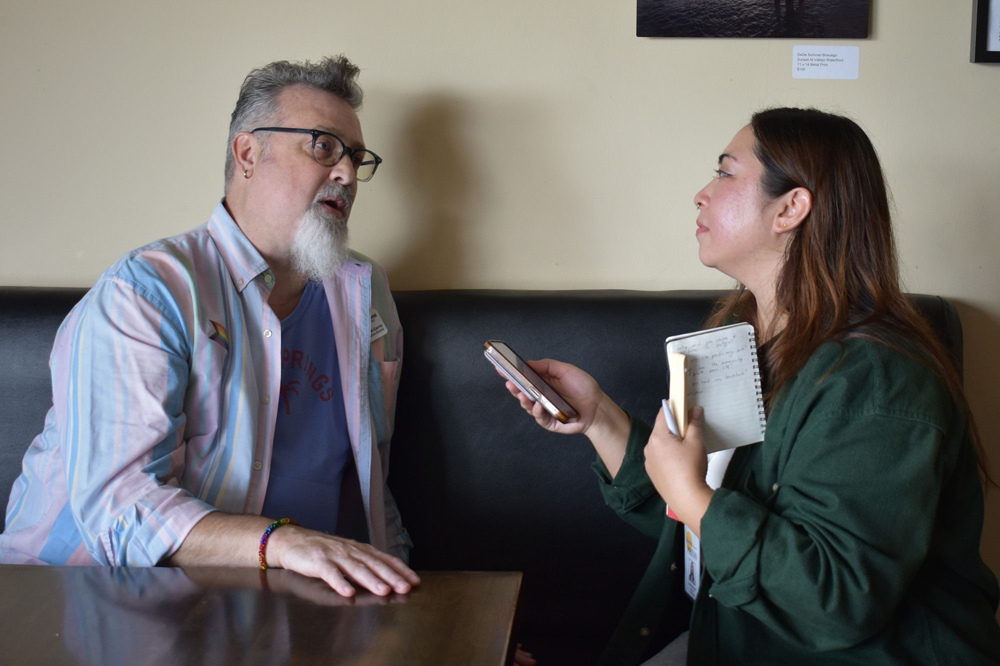
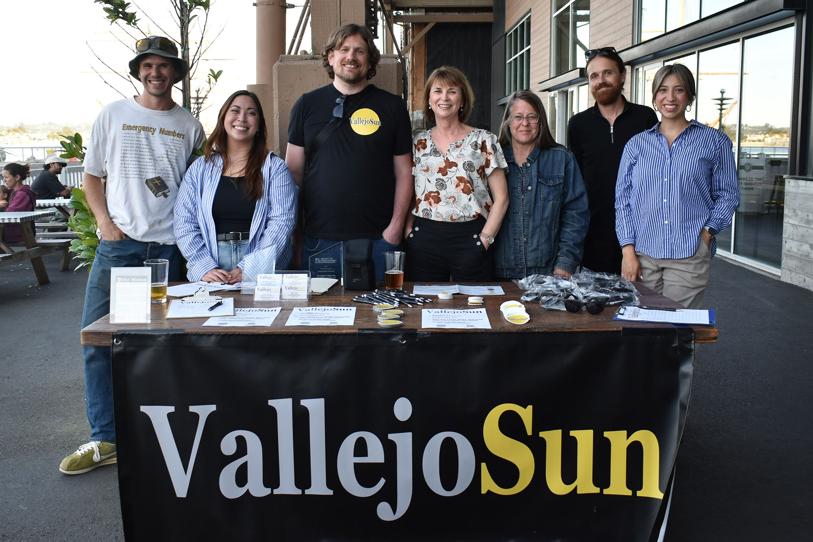

Economic benefit
Ads help direct spending toward local businesses, events, and services that keep money circulating in the community.
The Vallejo Sun connects residents with local businesses, events, and organizations while funding independent reporting that helps the community stay informed and engaged.
The Vallejo Sun is not just another ad channel. It is a trusted local institution. That trust gives advertisers stronger context, stronger attention, and stronger alignment with readers who care about Vallejo.
Ads help direct spending toward local businesses, events, and services that keep money circulating in the community.
Advertising supports independent local reporting, public accountability, and broader civic participation.
Your message appears alongside trusted journalism that readers actively choose to spend time with.
Readers are highly engaged with Vallejo and Solano County. They use the Sun to decide what events to attend, what causes to support, and which local businesses to visit.
Most readers live in Vallejo, with additional reach in Benicia and nearby communities.
Readers respond to coverage by attending events, supporting local organizations, and spending with local businesses.
Regular readership and strong newsletter performance make repeat advertising more valuable over time.
Local imagery helps show the real audience behind the numbers: residents, artists, shoppers, diners, and eventgoers participating in Vallejo life.




Vallejo Sun reporting is grounded in real conversations, real sources, and real community relationships. That proximity builds trust, and trust increases attention to the businesses and organizations that advertise with us.

Our journalists spend time in the field, in government spaces, and in one-on-one interviews. Readers come to the Sun for reporting they cannot get elsewhere.

Our reporting is connected to the people, organizations, and issues that shape life in Vallejo. That local relevance helps readers act on what they see.
Beyond advertising, the Vallejo Sun occasionally offers trainings on media, promotion, and community engagement for local businesses and organizations.
These sessions help local organizations think more strategically about promotion, announcements, event visibility, and working with local media.
The Vallejo Sun is a real local team with real relationships in the community. That visibility and accountability matter to readers and advertisers alike.

We show up in person, participate in community events, and stay accountable to the readers and businesses we serve.
Use the home page to establish credibility, not to list every product.
“Whenever you send out your newsletters, we get a good number of requests coming through. We’re doing our best to spread more awareness to the brand and it’s been working.”
“I have heard from clients that they like seeing my advertised listings on the site and from people who have become new clients due to my consistent advertising.”
Send occasional quarterly updates to local businesses and advertisers with new opportunities, seasonal campaigns, sponsorship ideas, and announcements about upcoming trainings.
Browse ad offerings, calendar promotions, and Best Of sponsorships, or get in touch to talk through the right fit.
Contact: Scott Morris · scott@vallejosun.com · (510) 871-5114